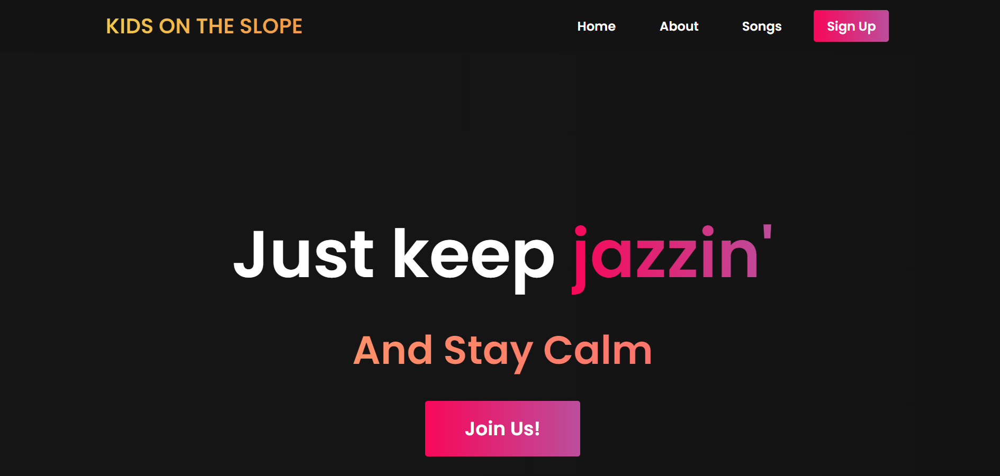

Projek Website KIDS ON THE SLOPE + AJAX
Projek ini dibuat untuk tugas sesi 10 BNCC. Tugas ini mengharuskan pemakaian HTML, CSS, JS, serta AJAX sesuai file yang diberi sehingga seluruh elemen ada pada website ini.
NAVBAR + HOME
ABOUT

Projek ini dibuat untuk tugas sesi 10 BNCC. Tugas ini mengharuskan pemakaian HTML, CSS, JS, serta AJAX sesuai file yang diberi sehingga seluruh elemen ada pada website ini.